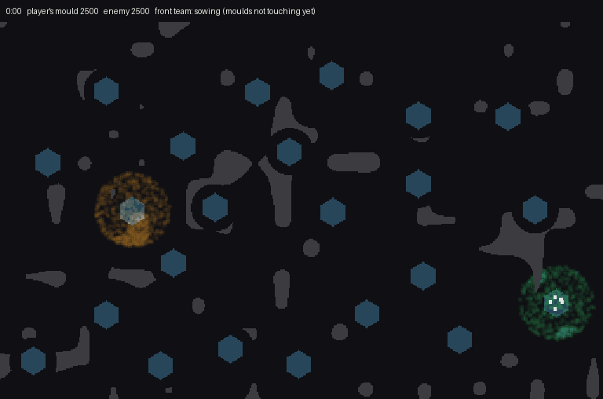

<title>Gardeners Front Hand</title>
<meta name="claude:viewport-fit-sides" content="cover">
<link rel="stylesheet" href="https://fonts.googleapis.com/css2?family=Space+Grotesk:wght@500;700&family=Inter:wght@400;600&family=JetBrains+Mono:wght@400&display=swap">
<style>
/* Layout: one reading column; the GIF first, the counts beside it, then the rule and the 8-seed table. */
:root {
  --bg: #f4f6f3; --fg: #1b211d; --muted: #5d685f; --line: #d5dcd5;
  --own: #2f9d62; --enemy: #c27a1a; --panel: #ffffff;
  --display: "Space Grotesk", "Segoe UI", system-ui, sans-serif;
  --body: "Inter", system-ui, -apple-system, sans-serif;
  --mono: "JetBrains Mono", ui-monospace, Menlo, monospace;
}
@media (prefers-color-scheme: dark) { :root:not([data-theme="light"]) {
  --bg: #121614; --fg: #e3e9e4; --muted: #95a198; --line: #2b332d;
  --own: #4cc684; --enemy: #e19a3c; --panel: #1a201c; color-scheme: dark } }
:root[data-theme="dark"] {
  --bg: #121614; --fg: #e3e9e4; --muted: #95a198; --line: #2b332d;
  --own: #4cc684; --enemy: #e19a3c; --panel: #1a201c; color-scheme: dark }
body { background: var(--bg); color: var(--fg); font-family: var(--body); line-height: 1.55; }
main { max-width: 820px; margin: 0 auto; padding-block: 28px 48px;
  padding-left: max(16px, env(safe-area-inset-left, 0px)); padding-right: max(16px, env(safe-area-inset-right, 0px));
  display: flex; flex-direction: column; gap: 22px; }
h1, h2 { font-family: var(--display); text-wrap: balance; margin: 0; }
h1 { font-size: 1.9rem; }
h2 { font-size: 1.2rem; }
p { margin: 0; max-width: 65ch; }
.lede { color: var(--muted); }
figure { margin: 0; display: flex; flex-direction: column; gap: 8px; }
figure img { width: 100%; border-radius: 6px; border: 1px solid var(--line); image-rendering: pixelated; }
figcaption { font-size: 0.9rem; color: var(--muted); }
.key { display: flex; gap: 16px; flex-wrap: wrap; font-size: 0.9rem; }
.sw { display: inline-block; width: 12px; height: 12px; border-radius: 2px; vertical-align: -1px; margin-right: 6px; }
.wrap { overflow-x: auto; }
table { border-collapse: collapse; width: 100%; font-variant-numeric: tabular-nums; font-size: 0.92rem; }
th, td { text-align: right; padding: 6px 10px; border-bottom: 1px solid var(--line); white-space: nowrap; }
th:first-child, td:first-child { text-align: left; }
th { font-weight: 600; color: var(--muted); font-size: 0.8rem; letter-spacing: 0.04em; text-transform: uppercase; }
tr.hl td { font-weight: 600; }
ol { margin: 0; padding-left: 1.3em; max-width: 65ch; display: flex; flex-direction: column; gap: 4px; }
code { font-family: var(--mono); font-size: 0.86em; }
.note { font-size: 0.88rem; color: var(--muted); }
</style>
<main>
  <h1>Gardeners: the front hand</h1>
  <p class="lede">Your soldiers grow your own mould against the enemy's. Two soldiers sow the bank thin on the way to crystals. Once the two moulds touch, two more soldiers form a front team that reads the line every 20 seconds and picks fire, sow or road. CPU dish, 2,500 walkers a side.</p>

  <figure>
    
    <figcaption>Seed 1, 0:00 to 5:00, a frame every 6 game seconds. The header shows each mould's walkers and the front team's current pick. At 5:00 your mould has 21,667 walkers and the enemy 4,116. The sow2 hand ends this seed at 17,062 against 6,161.</figcaption>
    <div class="key"><span><span class="sw" style="background:var(--own)"></span>your mould</span><span><span class="sw" style="background:var(--enemy)"></span>enemy mould</span><span>white dots: soldiers</span><span>hexagons: crystals</span></div>
  </figure>

  <h2>How the front team picks</h2>
  <ol>
    <li>It finds the line: your cell nearest the enemy's core.</li>
    <li>It counts each side's cells within 12 dish cells of that spot.</li>
    <li>Where the enemy holds more, it fires. The craters burn the enemy back.</li>
    <li>Where you hold more and the bank is over 600, it sows there.</li>
    <li>Otherwise it lays a road 15 cells into the enemy.</li>
  </ol>
  <p class="note">On seed 1 it sowed and laid roads while the moulds were far apart, then fired at nearly every read from 2:20 on (one sow at 2:40). A first version sent the two sowers themselves to the front. Fire won nearly every read, the bank piled up unspent (16,529 at 5:00) and your mould ended at 6,129.</p>

  <h2>Eight seeds, 5:00 each</h2>
  <div class="wrap">
  <table>
    <thead><tr><th>Hand</th><th>Your walkers</th><th>Enemy walkers</th><th>Soldiers at end</th></tr></thead>
    <tbody>
      <tr><td>idle</td><td>3,807</td><td>6,720</td><td>4.0</td></tr>
      <tr><td>random</td><td>15,494</td><td>12,157</td><td>0.5</td></tr>
      <tr><td>sow2</td><td>21,332</td><td>7,888</td><td>8.0</td></tr>
      <tr class="hl"><td>front</td><td>21,632</td><td>6,501</td><td>8.0</td></tr>
    </tbody>
  </table>
  </div>
  <p>Front against sow2, paired by seed: the enemy is smaller on 6 of 8 seeds (mean 1,387 fewer walkers), and your lead is bigger on 6 of 8 (p 0.29). That's a lean, not a proof, and fine for a tuning note. Front beats idle and random on all 8. Smoke checks pass: every game runs to the cap, and front never loses a soldier.</p>
  <p class="note">Raw: <code>Reports/player-mould-2026-11-12/garden/census6-front.txt</code>. Run: <code>garden census seeds=1-8 hands=idle,random,sow2,front</code>. Trace the picks with <code>GARDEN_TRACE=1</code>. These counts come from the small CPU dish; only the direction should carry to the GPU.</p>
</main>
